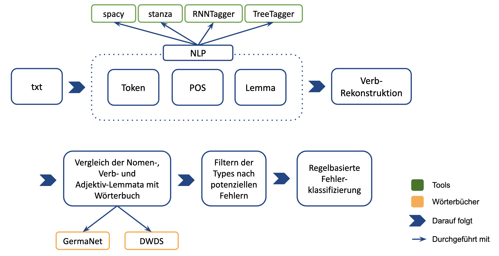

## Poesie als Fehler ### Ein **Tool Misuse** Experiment -- ## Teaser -- ## Gliederung 1. Problemhorizont 2. Operationalisierung 3. Analyse 4. Kritik und Ausblick -- ## 1. Problemhorizont --- ### Annäherung durch Abweichung * * * --- ### Idee * Standardsprache * NLP-Tools * Fehler = Merkmal? -- ## 2. Operationalisierung --- ### Ansatz * Kein Gold-Standard * Workaround --- ### Korpora * Lyrikkorpus * 12 Autorïnnen * von Goethe bis Tucholsky * * Kanonkorpus * 100 deutschsprachige Romane * 19. Jahrhundert --- ### Pipeline  --- ### Potenzielle Fehler -- ## 3. Analyse --- ### Fehlertypologisierung --- ### Ergebnisse * Abbildungen --- ### Resümee * "Lyrische Störung": Prosodische Deformation, Lyrische Topographie * Epik und Lyrik: Kreative Lexik -- ## 4. Kritik und Ausblick --- * * * -- ## Zugang * [Korpora und Code](https://gitup.uni-potsdam.de/sluytergaeth/poetry_as_error) auf GitLab * Tools: * [spacy](spacy.io/) * [stanza](https://stanfordnlp.github.io/stanza/) * [RNNTagger](https://www.cis.uni-muenchen.de/~schmid/tools/RNNTagger/) * [Treetagger](https://www.cis.uni-muenchen.de/~schmid/tools/TreeTagger/) -- ## Bibliographie